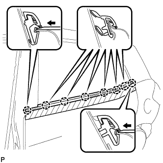
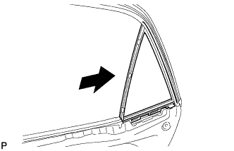
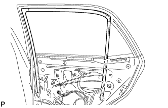
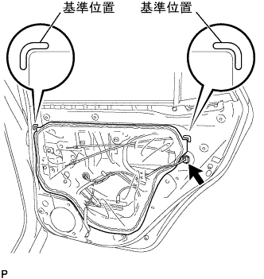
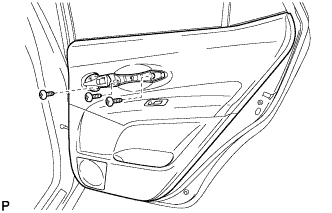
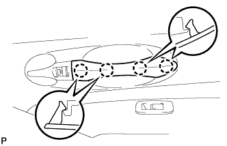

Rear Door Belt Moulding Assembly LH Installation |
| 1. Install Rear Door Belt Moulding Assembly LH |
 |
Engage the 8 claws to install the rear door belt moulding assembly LH.
| 2. Install Rear Door Glass Sub-assembly LH |
 |
Slide the rear door glass RH as shown in the illustration and install it to the rear door window regulator RH.
| 3. Install Rear Door Quarter Window Glass LH |
Install the rear door quarter window glass RH to the rear door quarter window weatherstrip RH.
 |
Install the rear door quarter window glass RH together with the rear door quarter window weatherstrip RH.
| 4. Install Rear Door Window Division Bar Sub-assembly LH |
 |
Insert the rear door window division bar RH from above the vehicle, and install it with the 2 bolts and screw.
| 5. Install Rear Door Glass Run LH |
 |
Install the rear door glass run RH.
| 6. Install Rear Door Service Hole Cover LH |
Apply butyl tape to the door panel side.
Pass each connector, the rear door lock remote control cable RH and rear door inside locking cable RH through a new rear door service hole cover RH.
 |
Align a new rear door service hole cover RH with the reference position on the rear door panel and attach it.
Connect the connector.
| 7. Install Rear Door Glass Weatherstrip Inner LH |
 |
Install the rear door glass weatherstrip inner RH to the rear door panel.
| 8. Install Rear Door Inside Handle Sub-assembly LH |
 |
Install the rear door lock remote control cable RH and rear door inside locking cable RH to the rear door inside handle RH.
 |
Engage the 2 claws to install the rear door inside handle RH to the rear door trim board RH.
| 9. Install Rear Door Trim Board Sub-assembly LH |
 |
Engage the 3 claws to install the rear door trim board RH to the rear door glass weatherstrip inner RH.
Engage the 9 clips to install the rear door trim board RH to the rear door panel.
 |
Install the 3 screws.
| 10. Install Door Assist Grip Cover LH |
 |
Engage the 4 claws to install the door assist grip cover RH to the rear door trim board RH.
| 11. Install Rear Door Inside Handle Bezel LH |
 |
Engage the 3 claws to install the rear door inside handle bezel RH to the rear door trim board RH.